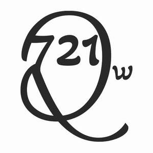

Trade Mark Journal No.2025/036 5 September 2025
UK00004253625 23 August 2025 (20,24,35,37,41,42)

- Class 20
- Furniture for house, office and garden Kitchen furniture Furniture and furnishings Bathroom furniture Bedroom furniture Make-up mirrors for the home Nursery furniture Living room furniture Antique style furniture Garden furniture Furniture for kitchens School furniture Furniture (School -) Furniture for bathrooms Bathroom fittings in the nature of furniture Patio furniture Furniture for use in rest rooms Shelves being nursery furniture Office furniture Furniture (Office -) Modular bathroom furniture Stationery cabinets [furniture] Kitchen dressers [furniture] Furniture Shop furniture Outdoor furniture Indoor furniture Metal furniture and furniture for camping Security cabinets [furniture] Fitted kitchen furniture Camping furniture Furniture for camping Fitted bedroom furniture Furniture for motor homes Bathroom vanities [furniture] Furniture cabinets Cabinets [furniture] Garden furniture made of metal Household furniture Computer cabinets [furniture] Wall decorations of wood Wall shelves furniture Garden furniture manufactured from wood Door furniture made of stoneware Lawn furniture Pet furniture .
- Class 24
- Textiles for interior decorating Fabrics for interior decorating Interior decoration fabrics Wall decorations of textile Textiles for furnishings.
- Class 35
- Sales promotion for third parties Arranging of buying and selling contracts for third parties Sales promotions at point of purchase or sale, for others.
- Class 37
- Installation of lighting systems Installation of lighting apparatus Lighting apparatus installation.
- Class 41
- Museum curator services Creation [writing] of educational content for podcasts Publication of the editorial content of sites accessible via a global computer network Creation [writing] of podcasts Research library services Archive library services Artistic management of performing artists Online research library services Museum services relating to microscopy Art exhibition services Online digital publishing services Artistic management of music venues Organising of education exhibitions Multimedia publishing of journals Publication of work manuals for business management Photography Portrait photography Aerial photography Portrait photography services Photography services Photography instruction Macro photography services Audio and video production, and photography Film editing (Photographic -) Audio, video and multimedia production, and photography Aerial photography via drones Photographer services Education services relating to photography Photographic imaging services by drone Post-production editing services in the field of music, videos and film Aerial videography services Photo editing Magazine publishing Publication of magazines Magazines (Publication of -) Publication of consumer magazines Publication of electronic magazines Newspaper publication Services for the publication of magazines Publishing of web magazines Multimedia publishing of magazines Multimedia publishing of magazines, journals and newspapers Publication of books, magazines, almanacs and journals Publishing of books, magazines Publication of periodicals Newspaper publishing Publication of newspapers Rental of newspapers and magazines Issue of publications Rental of magazines Publication of newspapers, periodicals, catalogs and brochures Publication of journals Publication of booklets Publication of catalogs Publishing services for books and magazines Publication of brochures Online publication of electronic newspapers Publication of books Books (Publication of -) Publication of catalogues Electronic online publication of periodicals and books Publishing of magazines in electronic form on the Internet Publication of music Publishing of newspapers Publication of printed directories Publication of manuals Publication of printed matter and printed publications Publication of posters Online publication of electronic books and journals Publication of electronic books and journals online Publication of photographs Publication of electronic books and periodicals on the Internet Publishing services for periodical and non-periodical publications, other than publicity texts Publication of leaflets Publication of electronic books and journals on-line On-line publication of electronic books and journals Publication of music books Publishing of electronic publications Publication of periodicals and books in electronic form Provision of an online magazine featuring information in the field of computer games Publication of calendars On-line publication of electronic books and journals (non-downloadable) Consultation services relating to the publication of magazines Publication of year books Publishing of journals Multimedia publishing of newspapers Electronic publication Online electronic publishing of books and periodicals Publishing a newspaper for customers on the Internet Publishing of medical publications Publication of books, reviews Publication of sheet music Publication of multimedia material online Providing on-line non-downloadable general feature magazines Publication of textbooks On-line publication of electronic books and journals [not downloadable] Publication of prospectuses Multimedia publishing of electronic publications Book publishing Rental of printed publications Publication of audio books Publication of online reviews in the field of entertainment Multimedia publishing of journals Publishing of newsletters Publishing of electronic books and journals online Online publications, namely blogs Publication of printed matter Publication of text books Publication and editing of printed matter Publication of educational books .
- Class 42
- Design services Design of audio-visual creative works Graphic design services Illustration services (design) Brand design services Architectural design services Design services for art-work Engineering design services Product design services Fashion design consulting services Interior design services Technological design services Custom design services Commercial design services Design services for architecture Architecture design services Design services (Packaging -) Design services for packaging Packaging design services Logo design services Industrial design services Illustrating services (design) Scientific design services Kitchen design services Graphic illustration design services Retail design services Building design services Office layout design services Vehicle design services Shopfitting design services Dress design services Textile design services Design and graphic arts design for the creation of web sites Professional services relating to architectural design Platforms for graphic design as software as a service [SaaS] Business card design services Cake design services Furnishing design services Computer design services Design consultancy Industrial packaging design services Technical design Design services for furniture Industrial engineering design services Website design services Art work design Civil engineering design services Jewellery design services Theatrical lighting design services Interior design services for boutiques Shopfitting design consultancy services Consultancy services relating to interior design Ship design consultancy services House design services Clothing design services Design services for clothing Interior design services for shops Design services relating to interior decoration Product design Styling [industrial design] Design services for exhibitions Design services for building interiors Design services for the construction industry Commercial art design Computer-aided engineering design services Engineering design and consultancy Bathroom design services Footwear design services Visual design Design and development of multimedia products Interior design services for the retail industry Landscape lighting design services Product design and development Closet design services Professional consultancy relating to the design of interior accommodation Engineering design Design and development of engineering products Engineering services for the design of structures Services for the planning [design] of offices Computer assisted engineering design services Services for the design of business premises Architectural services for the design of retail premises Webpage design services Computer graphics design services Computer-aided engineering design and drawing services Advisory services relating to interior design Computer design and programming services Planning and layout design services for cleanroom environments Design services relating to shop interiors Design services for computers Design of engineering products Design services relating to artwork Architectural services for the design of shopping centers Graphic design Architectural services for the design of office facilities Architectural design Website design and development Web site design and creation services Graphic arts design Design (Graphic arts -) Design services relating to architecture Design of software Software design Design and development of energy management software Vehicle engine design services Design of products Professional consultancy relating to industrial design Software design and development Engineering services for the design of machinery Microchip design services Website design consultancy Advisory services relating to design engineering Consultancy services relating to design Graphic art design Commercial interior design Technological services relating to design Design and development of new products Industrial art design Design planning Industrial and graphic art design Design services relating to packaging Engineering services relating to machine tool design Software as a service [SaaS] featuring software platforms for graphic design Consultation services relating to interior design Design and graphic arts design for the creation of web pages on the Internet Technical design and planning of power stations Preparation of architectural design Automotive design Design services relating to interior decorating for offices Services for the planning [design] of clubs New product design Layout design services for clean room environments Design of artwork Fashion design Chemical analysis services for use in design Services for the design of maps Industrial design Design (Industrial -) Computer aided design services Design services for the interior of buildings Intranet design, development and maintenance Theatrical lighting design Landscape lighting design Design of lighting systems Theatrical lighting design services Landscape lighting design services .
K.W Creation Limited